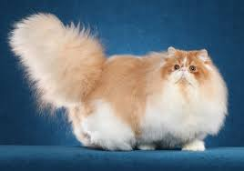

Persian Cat
Persian Cat
The Persian cat is a long-haired breed characterized by its round face and short muzzle. They are known for their gentle and calm personality.
Read moreDiscover various popoular cat breeds and learn more about their characteristics, history, and care.
The Persian cat is a long-haired breed characterized by its round face and short muzzle. They are known for their gentle and calm personality.
Read moreThe Siamese cat is one of the first distinctly recognized breeds of Asian cat. They are known for their slender bodies, blue almond-shaped eyes, and large ears.
Read moreThe Maine Coon is one of the largest domesticated cat breeds. They are known for their friendly and playful nature.
Read more
The Bengal cat is known for its wild appearance and energetic personality. They have a distinctive spotted or marbled coat.
Read more